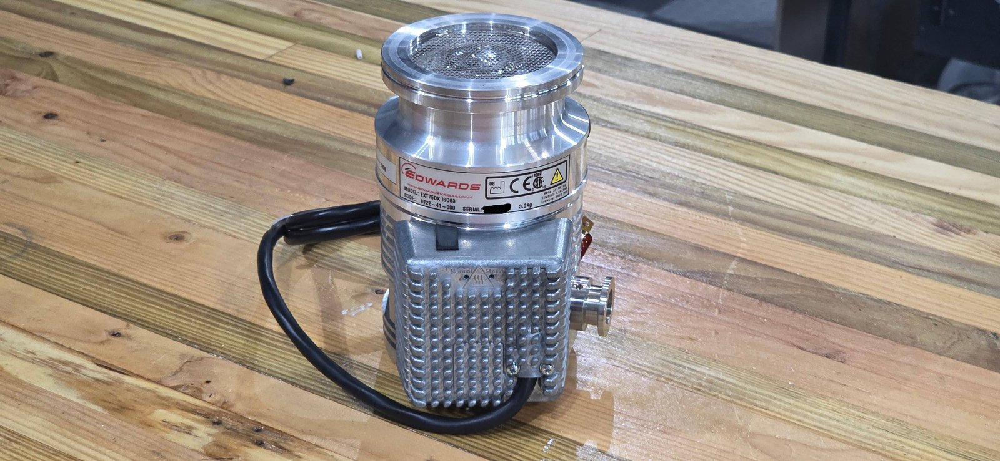
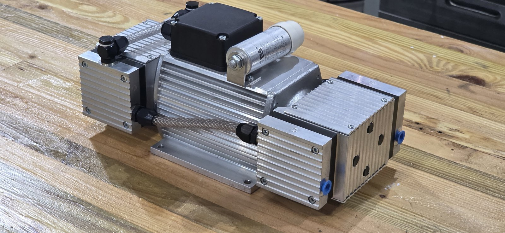
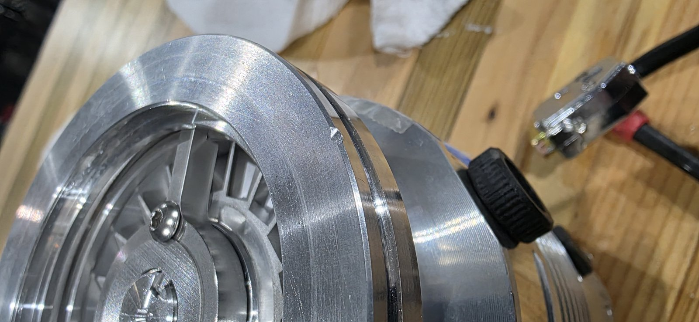
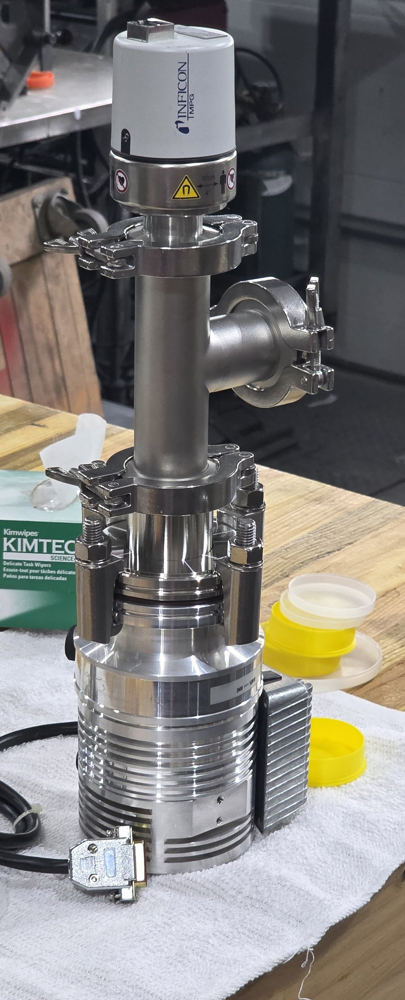

Milestone 2: vacuum
October 2026. The first purchase made to the written plan: a turbo pump, a backing pump and a gauge, all bought used and to be proven on a blanked-off test before anything custom is cut. The parts have arrived and passed their first looks. The pump-down waits on two small fittings.
Why this is milestone 2 and not 1: milestone 1 is the scan engine, which is pure electronics and runs in parallel. See the electronics page.
What was bought
- Turbo pump: Edwards EXT75DX. A turbomolecular pump is a stack of bladed rotors spinning at tens of thousands of rpm that bats gas molecules downward and out. This one moves 61 litres of gas per second at its inlet, has its drive electronics built into the pump body, and runs from 24 volts. The inlet is an ISO 63 flange, a flat 95 mm face sealed by an O-ring and held by claw clamps. Pumps like this turn up on the surplus market from retired mass spectrometers, which is where this one came from.
- Backing pump: a KNF dry diaphragm pump. A turbo cannot exhaust straight to air. The backing pump takes the system from atmosphere down to about half a Torr and then carries away whatever the turbo pushes out. A diaphragm pump has no oil anywhere, so nothing can creep back up the line toward the column.
- Gauge: an Inficon MPG400 full-range gauge. Two sensors in one body. A Pirani sensor measures how well the thin gas conducts heat away from a wire, and works from atmosphere down to rough vacuum. A cold-cathode sensor holds a glow discharge in a magnetic field and measures its current, and works from there down to a hundred-millionth of a Torr. The gauge switches between them on its own and puts out one voltage that the controller reads.
- A 24 volt supply. An industrial DIN-rail supply that will be the only 24 volt source in the finished machine. It was bought early because the turbo draws 5 amps while it spins up, more than the bench supply on hand could give.
- Fittings for the test. All stainless: an adapter from the pump's ISO 63 inlet down to the smaller KF40 family, a KF40 tee, blank flanges, clamps and centring rings, and a flexible bellows hose from the turbo's exhaust to the backing pump. Every piece is reused on the real chamber afterwards.


Why these
- Used, with a return window. A worn turbo bearing is the most likely way to lose money on this project, so the pump was only bought from a seller who takes returns, and the test below runs inside that window.
- Drive electronics built in. Many surplus turbos need a separate controller box that costs as much as the pump and is easy to mismatch. This one needs only 24 volts and a start signal.
- A pump that tolerates a diaphragm backing pump. Older pure-turbo designs need an oil pump behind them. This one has an extra drag stage that lets it exhaust at a few Torr, which a small dry pump can handle.
- From laboratory use. Pumps from chip-making tools can carry corrosive residue. Mass spectrometer pumps have only ever seen clean gas.
What the numbers said
The first candidate was the same pump with a smaller KF40 inlet. Working the numbers showed why that mattered more than it looked. A pump only delivers its rated speed at its own flange. The gas must first get through the hole in the chamber wall, and a hole's capacity scales with its area. Through a 12.5 mm plate a 35 mm hole passes roughly 85 litres per second and a 63 mm hole roughly 300. So the small inlet would have lost about 40% at the chamber, the large one about 15%, and the small-inlet pump would have delivered about half the effective speed of the large one. Both would reach the vacuum the gun needs, but the small one would sit near the limit for the first hour after every sample change. Holding out for the ISO 63 inlet was the right call.
| Pump inlet | Speed at the chamber | Chamber pressure, first hours |
|---|---|---|
| KF40, 35 mm hole | about 26 L/s | 8 × 10-6 Torr |
| ISO 63, 63 mm hole | about 51 L/s | 4 × 10-6 Torr |
Surprises
- The gauge is a magnet. Its cold-cathode sensor holds a glow discharge with a strong permanent magnet. Stray magnetic fields bend the electron beam, so the gauge has to mount on the pumping line, well away from the column, and gets included in the magnetic survey of the finished machine.
- The backing pump has a pipe thread, not a flange. Its inlet is a small threaded hole in the manifold, and the first adapter bought for it was wrong. The US manual pointed at a tapered NPT thread. That adapter bound after two turns, and a machined flat face around the port gave the game away: it is a parallel G 1/8 thread, sealed by a washer rather than by the taper. The right adapter is on its way.
- Listing photos beat spec sheets. The gauge turned out to carry a KF40 flange rather than the KF25 assumed in the test plan, and the first candidate turbo's inlet turned out to be KF40 rather than ISO 63. Both were caught from the photos and the manufacturers' part lists before anything was ordered around them.
First checks
A used turbo is bought on trust, so the first thing to do is look. The inlet screen lifts out with a hook. Under a light the blades of the top rotor stage are complete, with no chips and no scuffs on the rim or the bore. The rotor spins freely by hand and does not catch, and there is no play when it is rocked sideways. Those are the three hand checks from the acceptance test, and all three passed.

Two things on the rotor looked like trouble and were not. A black dot on one blade is the mark the factory balancing machine watches to know where the rotor is in its turn, so it stays. Faint smears on two neighbouring blades only show at a glancing angle, which makes them a film on the surface rather than contact damage. Nothing on the blades gets wiped.
The backing pump was run from the wall on the open bench. It settled to an even note with no knocking. Held against a flat test piece and then switched off, it kept hold of the piece by suction, which means the valves seal with the motor stopped. A worn diaphragm pump lets go within seconds.
The gauge was unboxed, its label checked, and nothing more. The warning ring around its base is for the cold-cathode magnet.
The test stack
With the fittings in, the inlet side of the test was assembled on the turbo: screen refitted, centring ring on the flange, the adapter down to the smaller KF40 size held by four claw clamps tightened in a cross, then the tee, the gauge standing on top and a blank on the side branch, each on a centring ring and clamp. Gloves and lint-free wipes throughout, because a fingerprint inside a vacuum system takes hours to pump away.

The stack is standing on the pump's rubber feet. Before the rotor ever turns, the base gets bolted down through its tapped holes: a turbo at full speed stores enough energy that it must never be free to move.
The test
Cap the turbo's inlet with the adapter, the tee, the gauge and a blank, connect the backing pump through the bellows hose, and run it from the 24 volt supply on an open bench. The pump should reach full speed in a few minutes without unusual noise, vibration or heat. The pass mark is a pressure below one millionth of a Torr with nothing but the gauge on the inlet. A tired pump stalls well above that.
Results go here when it has run.
Next
Two fittings are still in the post: the bellows hose from the turbo's exhaust and the backing pump's inlet adapter. When they arrive, bolt the pump down, connect the backing line, and run the pump-down. The turbo's return window gives a few weeks to do it. In the meantime the electronics carry on, since none of it needs a vacuum. See the electronics page.